Du entscheidest Studio
Veröffentlichung: AKTIV · manuelle Freigabe: nein · Mindest-QC: 90 Punkte · Stand 2026-11-27 13:37
Episoden
| Episode | Status | QC | Länge | Plattformen |
|---|---|---|---|---|
| WOHNUNG 4B · TEIL 12 Aufgeschlossen |
Freigegeben | 98.0/100 98.0 |
35.7 s | – |
| WOHNUNG 4B · TEIL 11 Aufgelegt |
Geplant (18:00) | 98.0/100 98.0 |
35.6 s | youtube, tiktok |
| WOHNUNG 4B · TEIL 10 Oskar |
Geplant (18:00) | 100.0/100 100.0 |
36.0 s | youtube, tiktok |
| WOHNUNG 4B · TEIL 9 Wieder da |
Geplant (18:00) | 97.0/100 100.0 |
41.8 s | youtube, tiktok |
| WOHNUNG 4B · TEIL 8 Das Foto |
Geplant (18:00) | 98.0/100 98.0 |
44.4 s | youtube, tiktok |
| WOHNUNG 4B · TEIL 7 Meine Stimme |
Geplant (18:00) | 100.0/100 100.0 |
34.8 s | youtube, tiktok |
| WOHNUNG 4B · TEIL 6 Zwei Okans |
Geplant (18:00) | 100.0/100 100.0 |
36.5 s | youtube, tiktok |
| WOHNUNG 4B · TEIL 5 Zweimal |
Geplant (18:00) | 98.0/100 98.0 |
50.6 s | youtube, tiktok |
| WOHNUNG 4B · TEIL 4 Der Anruf |
Geplant (18:00) | 98.0/100 98.0 |
37.3 s | youtube, tiktok |
| WOHNUNG 4B · TEIL 3 Der Türspion |
Geplant (18:00) | 94.0/100 100.0 |
33.6 s | youtube, tiktok |
| WOHNUNG 4B · TEIL 2 Der Zettel |
Geplant (18:00) | 99.0/100 99.0 |
52.3 s | youtube, tiktok_entwurf_test, tiktok, tiktok_buffer_abgebrochen |
| WOHNUNG 4B · TEIL 1 Die Regel |
Veröffentlicht | 98.0/100 98.0 |
56.2 s | youtube, tiktok_entwurf_test, tiktok |
WOHNUNG 4B · TEIL 12 – Aufgeschlossen
Stimmen zu Teil 11 nicht abrufbar (YouTube-Zugang abgelaufen); bisher kamen nie Stimmen – gewählt wurde die spannendere Option A: aufschließen. Tagsüber schließt du 4B auf. Leer. Aus dem Schlafzimmer sagt deine eigene Stimme: 'Danke, dass du aufgeschlossen hast.' Im Flur liegt ein neues Foto: du vor Tür 4B – vor einer Minute aufgenommen. Okan ruft an und sagt zweimal: 'Komm sofort raus.' Hinter dir fällt die Tür zu.
QC-Punkte je Kategorie
Nicht bestandene Prüfungen
- Sprechtempo ≤ 4 Wörter/s: ['Hinter mir fällt die Tür zu.']
Abstimmung
noch keine Stimmen ausgewertet
Kontaktabzug
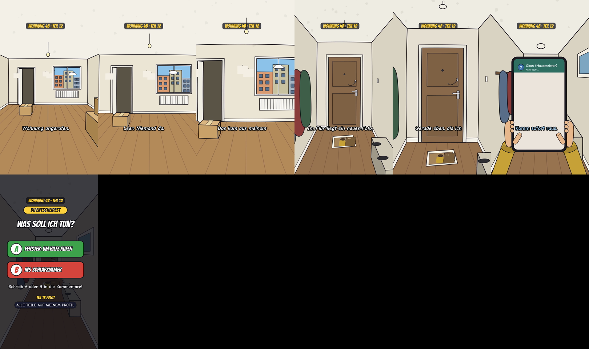
Sprachtest – Whisper hört jede Zeile ab
| Figur | Soll | Gehört | Ähnl. |
|---|---|---|---|
| du | Jemand hat mich aus meiner abgeschlossenen Wohnung angerufen. Also schließe ich auf. | Jemand hat mich aus meiner abgeschlossenen Wohnung angerufen, also schließe ich auf. | 1.00 |
| du | Leer. Niemand da. | leer. Niemand da. | 1.00 |
| du | Danke, dass du aufgeschlossen hast. | Danke, dass du aufgeschlossen hast. | 1.00 |
| du | Das kam aus meinem Schlafzimmer. Mit meiner Stimme. | Das kam aus meinem Schlafzimmer mit meiner Stimme. | 1.00 |
| du | Im Flur liegt ein neues Foto. | im Flur liegt ein neues Foto. | 1.00 |
| du | Das bin ich. Vor meiner Tür. Gerade eben, als ich aufgeschlossen habe. | Das bin ich vor meiner Tür, gerade eben als ich aufgeschlossen habe. | 1.00 |
| okan | Komm sofort raus. Komm sofort raus. | Komm sofort raus, komm sofort raus! | 1.00 |
| du | Hinter mir fällt die Tür zu. | Hinter mir fällt die Tür zu. | 1.00 |
| du | Was soll ich tun? A: Durchs Fenster um Hilfe rufen. Oder B: Ins Schlafzimmer schauen? Schreib es in die Kommentare! | Was soll ich tun? A. Durchs Fenster um Hilfe rufen oder B. ins Schlafzimmer schauen. Schreib es in die Kommentare. | 1.00 |
WOHNUNG 4B · TEIL 11 – Aufgelegt
Keine Stimmen für Teil 10 – gewählt wurde Option A: sofort auflegen (passt zur Serienbibel; Plan B hätte Frau Brandt schon 1983 im Haus gebraucht). Du nimmst Frau Brandt das Telefon ab und legst auf. Sofort klingelt dein Handy: 'Frau Brandt'. Neben dir sagt sie zweimal: 'Das bin ich nicht.' Der Anruf kommt aus Wohnung 4B – deiner Wohnung. Dann eine Nachricht: 'Ich bin es. Mach auf.'
QC-Punkte je Kategorie
Nicht bestandene Prüfungen
- Sprechtempo ≤ 4 Wörter/s: ['Sie steht doch direkt neben mir.']
Abstimmung
noch keine Stimmen ausgewertet
Kontaktabzug
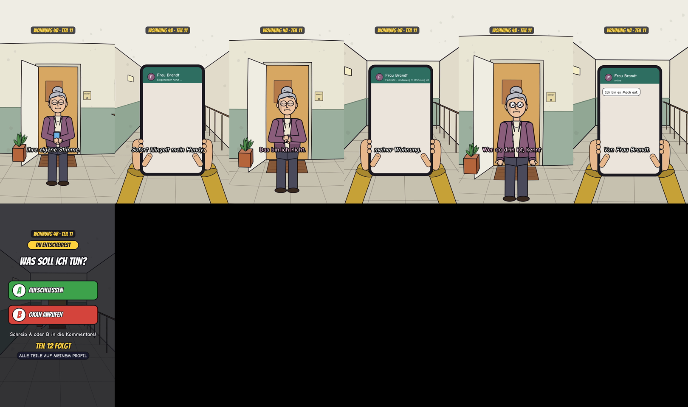
Sprachtest – Whisper hört jede Zeile ab
| Figur | Soll | Gehört | Ähnl. |
|---|---|---|---|
| du | Am Telefon meiner Nachbarin spricht ihre eigene Stimme. Ich lege sofort auf. | Am Telefon meiner Nachbarin spricht ihre eigene Stimme, ich lege sofort auf. | 1.00 |
| du | Sofort klingelt mein Handy. Frau Brandt. | Sofort klingelt mein Handy, Frau Brandt. | 1.00 |
| helga | Das bin ich nicht. Das bin ich nicht. | Das bin ich nicht, das bin ich nicht. | 1.00 |
| du | Sie steht doch direkt neben mir. | Sie steht doch direkt neben mir. | 1.00 |
| du | Der Anruf kommt aus meiner Wohnung. Und die ist abgeschlossen. | Der Anruf kommt aus meiner Wohnung und die ist abgeschlossen. | 1.00 |
| helga | Geh nicht ran, Kind. Wer da drin ist, kennt jetzt auch meine Stimme. | gehen nicht ran, Kind. Wer da drin ist, kennt jetzt auch meine Stimme. | 0.95 |
| du | Eine Nachricht. Von Frau Brandt. Aus meiner Wohnung. | Eine Nachricht von Frau Brandt aus meiner Wohnung. | 1.00 |
| du | Was soll ich tun? A: Meine Wohnung aufschließen. Oder B: Okan anrufen? Schreib es in die Kommentare! | Was soll ich tun? A. Meine Wohnung aufschließen oder B. Okan anrufen? Schreib es in die Kommentare. | 1.00 |
WOHNUNG 4B · TEIL 10 – Oskar
Keine Stimmen für Teil 9 – gewählt wurde Option A: Frau Brandt ausfragen, weil sie Oskars Geschichte erzählt (Staffelbogen). Oskar wohnte früher in 4B. Mitten in der Nacht klopfte es, mit seiner eigenen Stimme. Er hat aufgemacht – am Morgen war nur noch das Foto da. Seitdem kommt es zu jedem, der in 4B wohnt. Dann klingelt Frau Brandts Telefon, und ihre eigene Stimme sagt: 'Hallo. Ich bin's.'
QC-Punkte je Kategorie
Nicht bestandene Prüfungen
- Keine
Abstimmung
A: 0 · B: 0 (Sieger: offen)
Kontaktabzug
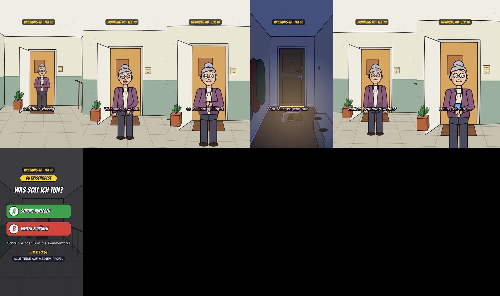
Sprachtest – Whisper hört jede Zeile ab
| Figur | Soll | Gehört | Ähnl. |
|---|---|---|---|
| du | Der Mann auf dem Foto vor meiner Tür ist seit über vierzig Jahren verschwunden. | Der Mann auf dem Foto vor meiner Tür ist seit über 40 Jahren verschwunden. | 1.00 |
| helga | Oskar. Er hat früher in deiner Wohnung gewohnt. | Und Oscar, er hat früher in deiner Wohnung gewohnt. | 0.87 |
| helga | Mitten in der Nacht hat es bei ihm geklopft. Mit seiner eigenen Stimme. | mitten in der Nacht, hat es bei ihm geklopft, mit seiner eigenen Stimme. | 1.00 |
| helga | Er hat aufgemacht. Am Morgen war nur noch das Foto da. | der hat aufgemacht. Am Morgen war nur noch das Foto da. | 0.94 |
| du | Und seitdem kommt das Foto zu jedem, der in meiner Wohnung wohnt? | Seitdem kommt das Foto zu jedem, der in meiner Wohnung wohnt. | 0.96 |
| helga | Zu jedem. Zu jedem. | Zu jedem, zu jedem. | 1.00 |
| helga | Hallo. Ich bin es. | Hallo, ich bin es. | 1.00 |
| du | Das ist ihre eigene Stimme. | Das ist ihre eigene Stimme. | 1.00 |
| du | Was soll ich tun? A: Sofort auflegen. Oder B: Weiter zuhören? Schreib es in die Kommentare! | Was soll ich tun? A. sofort auflegen oder B. weiterzuhören? Schreib es in die Kommentare. | 0.94 |
WOHNUNG 4B · TEIL 9 – Wieder da
Keine Stimmen für Teil 8 – gewählt wurde die spannendere Option B: Foto wegwerfen. Du wirfst das Foto am Abend in die Mülltonne im Hof. Am Morgen liegt es wieder unter deiner Tür – jetzt steht neben dem jungen Mann eine zweite Person im senfgelben Kapuzenpulli. Deinem. Auf der Rückseite: 'Nicht wegwerfen. Nicht wegwerfen. – O.' Frau Brandt: Das Foto kommt immer zurück – bei Oskar war es genauso. O. = Oskar, der Vormieter.
QC-Punkte je Kategorie
Nicht bestandene Prüfungen
- Sprachverständlichkeit (Whisper-Abgleich): Ø 0.95, 1 Zeile(n) unter Mindestwert (0.85, lange Sätze strenger) oder mit Nachlaut/Wiederholung
Abstimmung
A: 0 · B: 0 (Sieger: offen)
Kontaktabzug
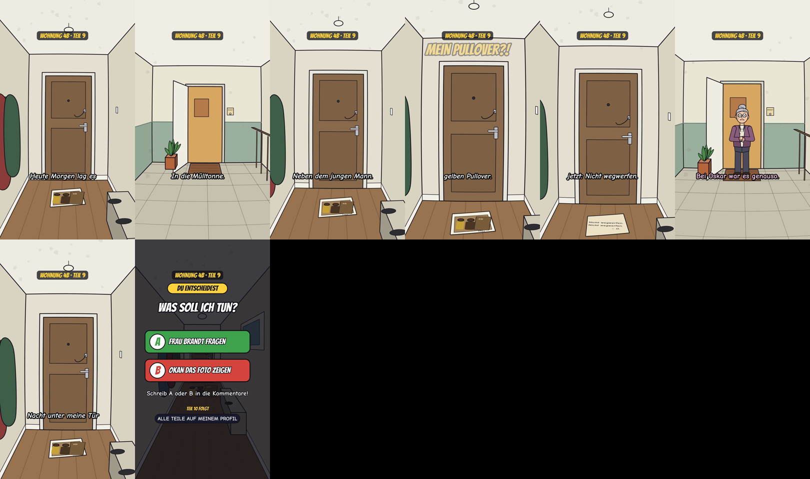
Sprachtest – Whisper hört jede Zeile ab
| Figur | Soll | Gehört | Ähnl. |
|---|---|---|---|
| du | Ich habe dieses Foto gestern weggeworfen. Heute Morgen lag es wieder unter meiner Tür. | Ich habe dieses Foto gestern weggeworfen. Heute Morgen lag es wieder unter meiner Tür. | 1.00 |
| du | Unten im Hof. In die Mülltonne. Ich weiß es genau. | im Hof, in die Mülltonne, ich weiß es genau. | 0.94 |
| du | Aber jetzt ist da noch jemand. Neben dem jungen Mann. | Aber jetzt ist da noch jemand, neben dem jungen Mann. | 1.00 |
| du | Die Person trägt meinen gelben Pullover. | die Person trägt meinen gelben Pullover. | 1.00 |
| du | Und auf der Rückseite steht jetzt: Nicht wegwerfen. Nicht wegwerfen. | Und auf der Rückseite steht jetzt nicht wegwerfen, nicht wegwerfen. | 1.00 |
| helga | Das Foto kommt immer zurück, Kind. Bei Oskar war es genauso. | Das Foto kommt immer zurück, Kind. Bei Oscar war es genauso. | 0.94 |
| du | Oskar. O. | Oskar. | 0.73 |
| du | Wer hat es dann heute Nacht unter meine Tür geschoben? | Wer hat es dann heute Nacht unter meine Tür geschoben? | 1.00 |
| du | Was soll ich tun? A: Frau Brandt ausfragen. Oder B: Okan das Foto zeigen? Schreib es in die Kommentare! | Was soll ich tun? A. Frau Brandt ausfragen. Oder B. Okaan das Foto zeigen? Schreib es in die Kommentare. | 0.97 |
WOHNUNG 4B · TEIL 8 – Das Foto
Keine Stimmen für Teil 7 – gewählt wurde Option B: Frau Brandt fragen, weil sie die Antwort auf die offene Frage nach dem Vormieter liefert. Du klopfst an die Wand zu 4A. Frau Brandt antwortet zweimal: 'Ich bin wach. Ich bin wach.' Er war schon einmal hier – lange vor dir. Am Morgen liegt ein altes Foto unter deiner Tür: ein junger Mann vor Tür 4B, 1983, auf der Rückseite 'Nicht öffnen. Nicht öffnen. – O.' O. ist nicht Okan. Dann ruft Okan an und sagt nur einmal: 'Wirf das Foto weg.'
QC-Punkte je Kategorie
Nicht bestandene Prüfungen
- Sprechtempo ≤ 4 Wörter/s: ['Das hat er nur einmal gesagt.']
Abstimmung
A: 0 · B: 0 (Sieger: offen)
Kontaktabzug
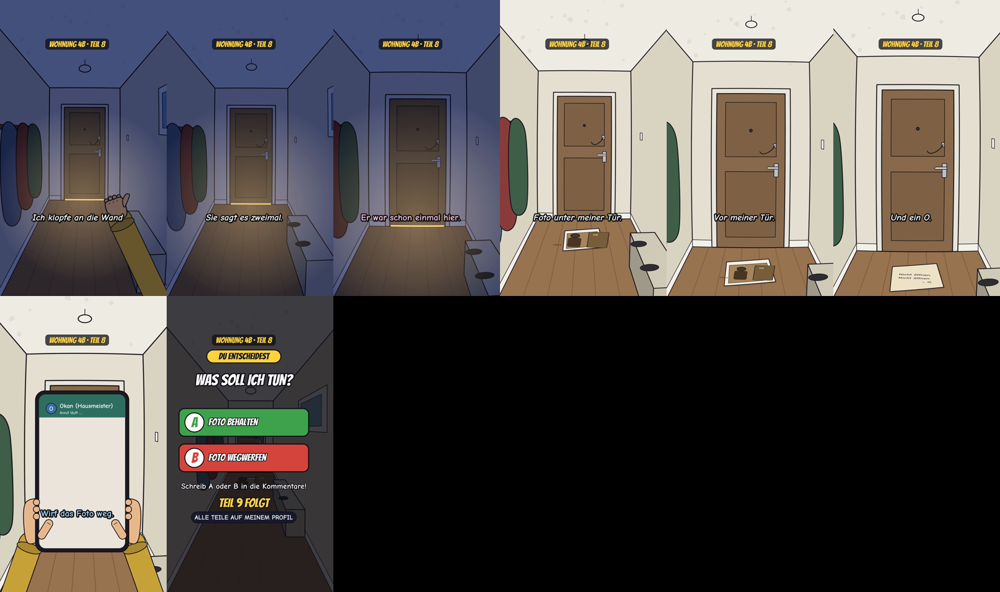
Sprachtest – Whisper hört jede Zeile ab
| Figur | Soll | Gehört | Ähnl. |
|---|---|---|---|
| du | Vor meiner Tür spricht jemand mit meiner Stimme. Ich klopfe an die Wand zu meiner Nachbarin. | Vor meiner Tür spricht jemand mit meiner Stimme. Ich klopfe an die Wand zu meiner Nachbarin. | 1.00 |
| helga | Ich bin wach. Ich bin wach. | Ich bin wach. Ich bin wach. | 1.00 |
| du | Frau Brandt. Sie sagt es zweimal. Wie Okan. | Frau Brandt. Sie sagt es zweimal wie Okan. | 1.00 |
| helga | Mach nicht auf, Kind. Er war schon einmal hier. Lange vor dir. | Mach nicht auf, Kind. Er war schon einmal hier, lange vor dir. | 1.00 |
| du | Am Morgen lag ein altes Foto unter meiner Tür. | Am Morgen lag ein altes Foto unter meiner Tür. | 1.00 |
| du | Ein junger Mann. Vor meiner Tür. Vor Wohnung vier B. | Ein junger Mann, vor meiner Tür, vor Wohnung 4B. | 0.90 |
| du | Auf der Rückseite. Nicht öffnen. Nicht öffnen. Und ein O. | auf der Rückseite, nicht öffnen, nicht öffnen und ein O. | 1.00 |
| du | Das ist nicht Okans Schrift. | Das ist nicht Okanz Schrift. | 0.86 |
| okan | Wirf das Foto weg. | Wirf das Foto weg. | 1.00 |
| du | Das hat er nur einmal gesagt. | Das hat er nur einmal gesagt. | 1.00 |
| du | Was soll ich tun? A: Foto behalten. Oder B: Foto wegwerfen? Schreib es in die Kommentare! | Was soll ich tun? A. Foto behalten. Oder B. Foto wegwerfen. Schreib es in die Kommentare. | 1.00 |
WOHNUNG 4B · TEIL 7 – Meine Stimme
Keine Stimmen für Teil 6 – gewählt wurde die spannendere Option A: den Okan vor der Tür testen. Du fragst nach dem Vormieter von 4B. Die Stimme vor der Tür antwortet nicht – sie wiederholt deine Frage, einmal, mit deiner eigenen Stimme. Am Telefon flüstert Okan: 'Jetzt kennt er auch deine Stimme.' Dann sagt draußen 'du': 'Mach auf. Ich bin's.'
QC-Punkte je Kategorie
Nicht bestandene Prüfungen
- Keine
Abstimmung
A: 0 · B: 0 (Sieger: offen)
Kontaktabzug
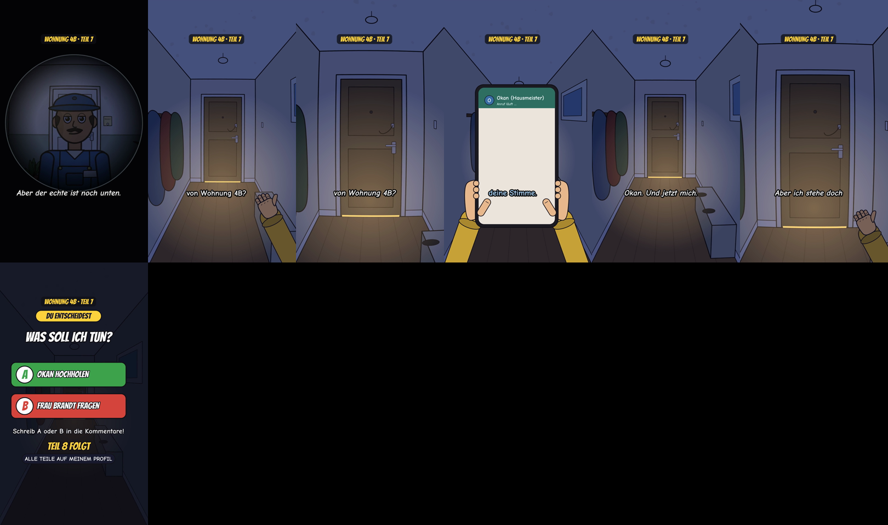
Sprachtest – Whisper hört jede Zeile ab
| Figur | Soll | Gehört | Ähnl. |
|---|---|---|---|
| du | Vor meiner Tür steht der Hausmeister. Aber der echte ist noch unten. | Vor meiner Tür steht der Hausmeister, aber der Echte ist noch unten. | 1.00 |
| du | Okan. Wie hieß der Vormieter von Wohnung 4B? | Wie hieß der Vormieter von Wohnung 4B? | 0.94 |
| du | Wie hieß der Vormieter von Wohnung 4B? | Wie hieß der Vormieter von Wohnung 4B? | 1.00 |
| du | Das ist meine Stimme. | Das ist meine Stimme. | 1.00 |
| okan | Jetzt kennt er auch deine Stimme. Deine Stimme. | Jetzt kennt er auch deine Stimme. Deine Stimme. | 1.00 |
| du | Er hat Lina gehört. Okan. Und jetzt mich. | Er hat Lina gehört. Oh, kann. Und jetzt mich. | 0.88 |
| du | Mach auf. Ich bin's. | Mach auf. Ich bin's. | 1.00 |
| du | Aber ich stehe doch hier drinnen. | Aber ich stehe doch hier drinnen. | 1.00 |
| du | Was soll ich tun? A: Okan hochholen. Oder B: Frau Brandt fragen? Schreib es in die Kommentare! | Was soll ich tun? A. Wo kann hochholen? Oder B. Frau Brandt fragen? Schreib es in die Kommentare. | 0.94 |
WOHNUNG 4B · TEIL 6 – Zwei Okans
Die Zuschauer wählten A: durch den Türspion schauen. Vor der Tür steht der Hausmeister Okan und lächelt – gleichzeitig ruft Okan an: 'Ich bin noch unten.' Beide sagen alles zweimal. Der Nachhall hat Okan zweimal gehört, also kann er es auch zweimal sagen. Zum ersten Mal entscheidet das Publikum, welche Stimme echt ist.
QC-Punkte je Kategorie
Nicht bestandene Prüfungen
- Keine
Abstimmung
A: 0 · B: 0 (Sieger: offen)
Kontaktabzug
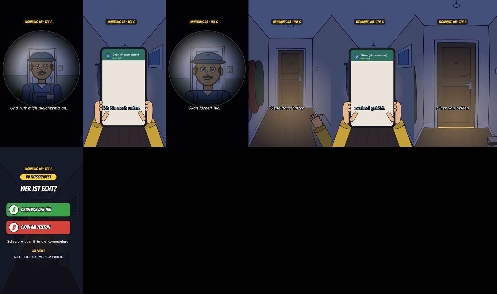
Sprachtest – Whisper hört jede Zeile ab
| Figur | Soll | Gehört | Ähnl. |
|---|---|---|---|
| du | Der Hausmeister steht vor meiner Tür. Und ruft mich gleichzeitig an. | Der Hausmeister steht vor meiner Tür und ruft mich gleichzeitig an. | 1.00 |
| okan | Ich bin noch unten. Ich bin noch unten. | Ich bin noch unten, ich bin noch unten. | 1.00 |
| du | Zweimal. | zweimal. | 1.00 |
| du | Er lächelt. Okan lächelt nie. | Er lächelt. Okan lächelt nie. | 1.00 |
| okan | Okan hier. Okan hier. | Okan hier, Okan hier. | 1.00 |
| du | Genau das hat er vorhin gesagt. Wort für Wort. | Genau das hat er vorhin gesagt. Wort für Wort. | 1.00 |
| okan | Hör zu. Er hat mich vorhin zweimal gehört. | Hör zu, er hat mich vorhin zweimal gehört. | 1.00 |
| du | Dann kann er es auch zweimal sagen. | Dann kann er es auch zweimal sagen. | 1.00 |
| du | Einer von beiden ist nicht Okan. | Einer von beiden ist nicht Okan. | 1.00 |
| du | Wer ist der echte Okan? A: Okan vor der Tür. Oder B: Okan am Telefon? Schreib es in die Kommentare! | Wer ist der echte Okan A. Okan vor der Tür oder B. Okan am Telefon? Schreib es in die Kommentare. | 1.00 |
WOHNUNG 4B · TEIL 5 – Zweimal
Keine gültigen Stimmen für Teil 4 – gewählt wurde die spannendere Option A: Okan wecken (per Anruf, denn nachts wird nicht geöffnet). Der Hausmeister kommt hoch, sagt alles zweimal und erklärt die Regel: Was er hört, kann er sagen – aber nur einmal. Dann sagt 'Okan' einen Satz nur ein einziges Mal: 'Jetzt kannst du aufmachen.'
QC-Punkte je Kategorie
Nicht bestandene Prüfungen
- Sprechtempo ≤ 4 Wörter/s: ['Das hat er nur einmal gesagt.']
Abstimmung
A: 1 · B: 0 (Sieger: A)
Kontaktabzug
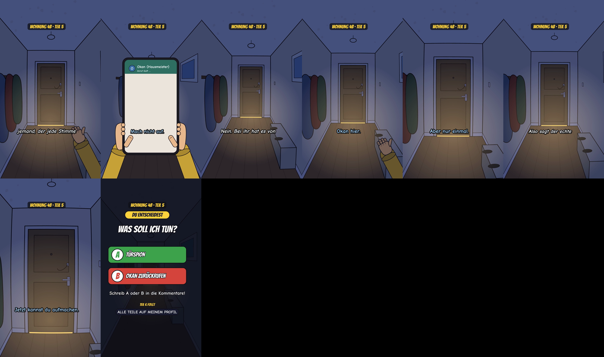
Sprachtest – Whisper hört jede Zeile ab
| Figur | Soll | Gehört | Ähnl. |
|---|---|---|---|
| du | Vor meiner Tür steht jemand, der jede Stimme nachmachen kann. | Vor meiner Tür steht jemand, der jede Stimme nachmachen kann. | 1.00 |
| du | Ich rufe den Hausmeister an. Okan. | Ich rufe den Hausmeister an. | 0.91 |
| okan | Ich komme hoch. Mach nicht auf. Mach nicht auf. | Ich komme hoch. Mach nicht auf. Mach nicht auf. | 1.00 |
| du | Frau Brandt auch wecken? Nein. Bei ihr hat es von innen geklopft. | Frau Brandt auch wecken. Nein, bei ihr hat es von innen geklopft. | 1.00 |
| okan | Okan hier. Okan hier. | Okan hier, Okan hier. | 1.00 |
| du | Er sagt alles zweimal. | Er sagt alles zweimal. | 1.00 |
| okan | Hör zu. Was er hört, kann er sagen. Aber nur einmal. Nur einmal. | hört zu. Was er hört, kann er sagen, aber nur einmal, nur einmal. | 0.95 |
| okan | Er hat Lina gehört. Und jetzt hört er mich. | Er hat Lina gehört, und jetzt hört er mich. | 1.00 |
| du | Also sagt der echte Okan alles zweimal. | Also sagt der echte Okan alles zweimal. | 1.00 |
| okan | Gut. Jetzt kannst du aufmachen. | Gut, jetzt kannst du aufmachen. | 1.00 |
| du | Das hat er nur einmal gesagt. | Das hat er nur einmal gesagt. | 1.00 |
| du | Was soll ich tun? A: Durch den Türspion schauen. Oder B: Okan zurückrufen? Schreib es in die Kommentare! | Was soll ich tun? A. Durch den Türspion schauen oder B. Okan zurückrufen? Schreib es in die Kommentare. | 1.00 |
WOHNUNG 4B · TEIL 4 – Der Anruf
Kaum Stimmen für Teil 3 – gewählt wurde die spannendere Option A: Lina anrufen. Sie liegt 300 km entfernt im Bett und hat nichts geschrieben, die Nachricht ist gelöscht. Dann klopft es, Lina hört es mit – und die Stimme vor der Tür sagt Linas Satz nach, wort-wörtlich, genau einmal.
QC-Punkte je Kategorie
Nicht bestandene Prüfungen
- Sprechtempo ≤ 4 Wörter/s: ['Du hast das auch gehört?']
Abstimmung
A: 0 · B: 0 (Sieger: offen)
Kontaktabzug
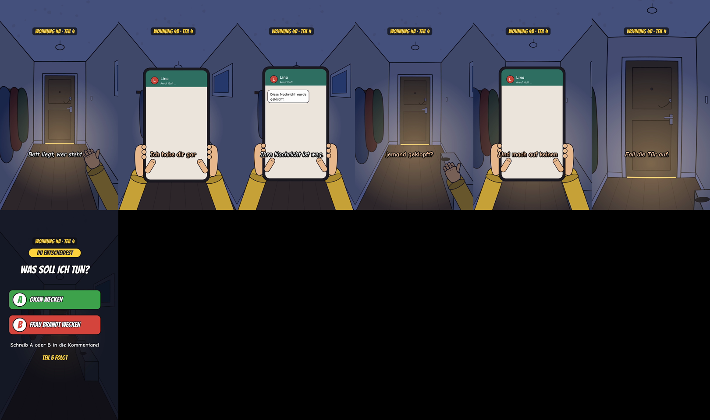
Sprachtest – Whisper hört jede Zeile ab
| Figur | Soll | Gehört | Ähnl. |
|---|---|---|---|
| du | Wenn Lina zu Hause im Bett liegt, wer steht dann vor meiner Tür? | wenn Lina zu Hause im Bett liegt. Wer steht dann vor meiner Tür? | 1.00 |
| lina | Was? Ich liege im Bett. Ich habe dir gar nichts geschrieben. | Was? Ich liege im Bett, ich habe dir gar nichts geschrieben. | 1.00 |
| du | Ihre Nachricht ist weg. Einfach gelöscht. | Ihre Nachricht ist weg, einfach gelöscht. | 1.00 |
| lina | Warte. Hat bei dir gerade jemand geklopft? | Warte, hat bei dir gerade jemand geklopft. | 1.00 |
| du | Du hast das auch gehört? | Du hast das auch gehört. | 1.00 |
| lina | Bleib ganz ruhig. Und mach auf keinen Fall die Tür auf. | Bleib ganz ruhig und mach auf keinen Fall die Tür auf. | 1.00 |
| lina | Bleib ganz ruhig. Und mach auf keinen Fall die Tür auf. | Bleib ganz ruhig und mach auf keinen Fall die Tür auf. | 1.00 |
| lina | Wer hat das gerade gesagt? | Wer hat das gerade gesagt? | 1.00 |
| du | Was soll ich tun? A: Okan wecken. Oder B: Frau Brandt wecken? Schreib es in die Kommentare! | Was soll ich tun? A. Okan wecken oder B. Frau Brandt wecken? Schreib es in die Kommentare. | 1.00 |
WOHNUNG 4B · TEIL 3 – Der Türspion
Die Zuschauer wählten A: um 03:07 durch den Türspion schauen. Das Treppenhaus ist leer, vor 4A stehen Frau Brandts Hausschuhe – und jemand klopft von INNEN an ihre Tür. Dann schreibt Lina: 'Bin vor deiner Tür, mach auf!' Doch Lina wohnt 300 km entfernt. Hinter der Tür flüstert ihre Stimme: 'Ich bin's.'
QC-Punkte je Kategorie
Nicht bestandene Prüfungen
- Sprachverständlichkeit (Whisper-Abgleich): Ø 0.92, 2 Zeile(n) unter Mindestwert (0.85, lange Sätze strenger) oder mit Nachlaut/Wiederholung
Abstimmung
A: 1 · B: 0 (Sieger: A)
Kontaktabzug
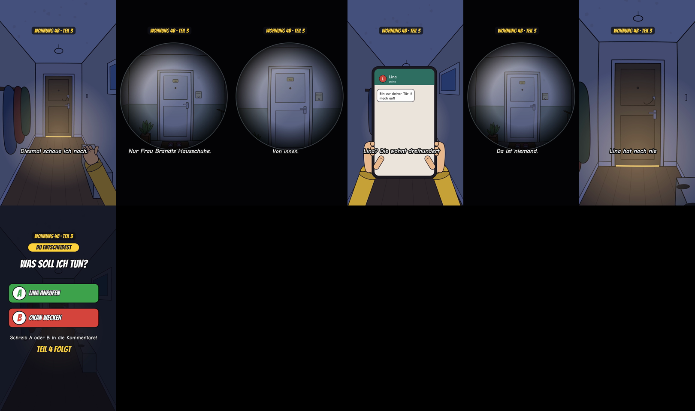
Sprachtest – Whisper hört jede Zeile ab
| Figur | Soll | Gehört | Ähnl. |
|---|---|---|---|
| du | Drei Uhr sieben. Diesmal schaue ich nach. | 3.07 Uhr. Diesmal schaue ich nach. | 0.88 |
| du | Leer. Nur Frau Brandts Hausschuhe. Ordentlich nebeneinander. | Lea, nur Frau Brandts Hausschuhe, ordentlich nebeneinander. | 0.90 |
| du | Moment. Da klopft jemand. Von innen. Bei Frau Brandt. | Moment, da klopft jemand von innen bei Frau Brandt. | 1.00 |
| du | Lina? Die wohnt dreihundert Kilometer weit weg. | Lina, die wohnt 300 km weit weg. | 0.72 |
| du | Da ist niemand. | Da ist niemand. | 1.00 |
| lina | Ich bin's. | Ich bin... | 0.83 |
| du | Lina hat noch nie gesagt: Ich bin's. | Lina hat noch nie gesagt, ich bin's. | 1.00 |
| du | Was soll ich tun? A: Lina anrufen. Oder B: Okan wecken? Schreib es in die Kommentare! | Was soll ich tun? a. Lina anrufen oder b. Okan wecken? Schreib es in die Kommentare | 1.00 |
WOHNUNG 4B · TEIL 2 – Der Zettel
Die Zuschauer wählten B: nicht öffnen. Nach 30 Minuten Klopfen geht die Stimme. Am Morgen liegt ein Zettel unter der Tür: 'Gut gemacht. – O.' Frau Brandt hat die ganze Nacht geschlafen – und verrät: Du bist nicht der Erste. Dann taucht Okan auf.
QC-Punkte je Kategorie
Nicht bestandene Prüfungen
- Mindest-Lesezeit 0,4 s: ['Ja.']
Abstimmung
A: 4 · B: 0 (Sieger: A)
Kontaktabzug

Sprachtest – Whisper hört jede Zeile ab
| Figur | Soll | Gehört | Ähnl. |
|---|---|---|---|
| du | Ihr habt euch für B entschieden. Richtige Antwort ... oder? | Ihr habt euch für B entschieden, richtige Antwort, oder? | 1.00 |
| du | Nach dreißig Minuten ununterbrochenem Klopfen ging sie endlich. | Nach 30 Minuten ununterbrochenem Klopfen ging sie endlich. | 0.90 |
| du | Doch schlafen konnte ich diese Nacht nicht. | Doch schlafen konnte ich diese Nacht nicht. | 1.00 |
| du | Ich beschloss herauszufinden, was hier los ist. | Ich beschloss herauszufinden, was hier los ist. | 1.00 |
| du | Am Morgen lag ein Zettel unter meiner Tür. | Am Morgen lag ein Zettel unter meiner Tür. | 1.00 |
| du | Guten Morgen, Frau Brandt. Haben Sie heute Nacht bei mir geklopft? | Guten Morgen, Frau Brandt. Haben Sie heute Nacht bei mir geklopft? | 1.00 |
| helga | Ich? Ich habe die ganze Nacht geschlafen. Wie ein Stein! | Ich habe die ganze Nacht geschlafen, wie ein Stein. | 0.95 |
| helga | Aber ... hat die Stimme gesagt: Ich bin's? | Aber hat die Stimme gesagt, ich bin's? | 1.00 |
| du | Ja. | Ja. | 1.00 |
| helga | Dann sind Sie nicht der Erste. | Dann sind sie nicht der Erste. | 1.00 |
| okan | Frau Brandt. Wir reden nicht über den Vormieter. | Frau Brandt, wir reden nicht über den Vormieter! | 1.00 |
| okan | Nicht über den Vormieter. | nicht über den Vormieter. | 1.00 |
| du | Was soll ich tun? A: Heute Nacht durch den Türspion schauen. Oder B: Okan heimlich folgen? Schreib es in die Kommentare! | Was soll ich tun? A. Heute Nacht durch den Türspion schauen. Oder B. Okan heimlich folgen. Schreib es in die Kommentare. | 1.00 |
WOHNUNG 4B · TEIL 1 – Die Regel
Neu in 4B: Hausmeister Okan verbietet, nachts die Tür zu öffnen. Nachbarin Frau Brandt warnt: 'Wenn jemand sagt, ich bin's – dann bin das nicht ich.' Um 03:07 klopft es – mit ihrer Stimme.
QC-Punkte je Kategorie
Nicht bestandene Prüfungen
- Sprechtempo ≤ 4 Wörter/s: ['... dann bin das nicht ich.', 'Ich weiß, dass Sie da sind.']
Abstimmung
A: 0 · B: 4 (Sieger: B)
Kontaktabzug

Sprachtest – Whisper hört jede Zeile ab
| Figur | Soll | Gehört | Ähnl. |
|---|---|---|---|
| du | Drei Uhr nachts. Und jemand klopft an meine Tür. | 3 Uhr nachts und jemand klopft an meine Tür. | 1.00 |
| okan | Willkommen in 4B! Hier sind Ihre Schlüssel. | Sie kommen in 4B, hier sind Ihre Schlüssel. | 0.85 |
| okan | Es gibt nur eine Regel: Nach Mitternacht öffnen Sie niemandem die Tür. | Es gibt nur eine Regel, nach Mitternacht öffnen sie niemandem die Tür. | 1.00 |
| okan | Niemandem. | Niemandem. | 1.00 |
| du | Äh... und warum? | Und warum? | 1.00 |
| okan | Fragen Sie lieber nicht. | Fragen Sie lieber nicht. | 1.00 |
| helga | Ach, der Neue aus 4B! Ich bin Frau Brandt. Ich hab Ihnen Kuchen gebacken. | Ach, der Neue aus Vierbe, ich bin Frau Brandt. Ich habe Ihnen Kuchen gebacken. | 0.90 |
| helga | Und noch etwas. Wenn nachts jemand klopft und sagt: Ich bin's ... | und noch etwas, wenn nachts jemand klopft und sagt, ich bin's. | 1.00 |
| helga | ... dann bin das nicht ich. | Und dann bin das nicht ich. | 0.91 |
| du | Lina hält das für einen Witz. Ich nicht. | Lina hält das für einen Witz, ich nicht. | 1.00 |
| helga | Hallo? Ich bin's, Frau Brandt! Bitte machen Sie auf! | Hallo, ich bin es Frau Brandt, bitte machen Sie auf. | 0.94 |
| du | Aber sie hat gesagt ... das ist nicht sie. | Aber sie hat gesagt, das ist nicht sie. | 1.00 |
| helga | Ich weiß, dass Sie da sind. | Ich weiß, dass sie da sind. | 1.00 |
| du | Was soll ich tun? A: Tür öffnen. Oder B: nicht öffnen? Schreib es in die Kommentare! | Was soll ich tun? a. Triö öffnen oder b. Nicht öffnen? Schreib es in die Kommentare. | 0.95 |
Serien
Wohnung 4B
Du ziehst in Wohnung 4B im Lindenweg 9. Der Hausmeister hat nur eine Regel: Nach Mitternacht niemandem die Tür öffnen. Dann klopft es um 03:07 Uhr.
Folgen: 12 veröffentlicht · Abstimmungen: 10
Pläne für die nächste Folge
A: Teil 13 'Fenster' – Du rufst aus dem Fenster in den Hof. Unten steht Okan und schaut hoch – und neben ihm steht jemand im senfgelben Kapuzenpulli und winkt. Okan ruft zweimal: 'Wer ist bei dir? Wer ist bei dir?'
B: Teil 13 'Schlafzimmer' – Du öffnest langsam die Schlafzimmertür. Das Bett ist gemacht, auf dem Kissen liegt Oskars altes Foto – jetzt ist der junge Mann darauf verschwunden, nur die Tür 4B ist noch zu sehen. Von hinten sagt deine Stimme: 'Jetzt bin ich dran.'
Figuren-Datenbank
Du (Ich-Erzähler)
Hauptfigur, Zuschauer-Perspektive (POV). Neu eingezogen in Wohnung 4B.
neugierig, etwas ängstlich, trockener Humor, will Geheimnisse lösen
Stimme: Piper None

Helga Brandt
Nachbarin aus 4A, wohnt seit 41 Jahren im Haus
warmherzig, backt ständig, plötzlich sehr ernst; hütet ein Geheimnis über das Haus
Stimme: Piper None
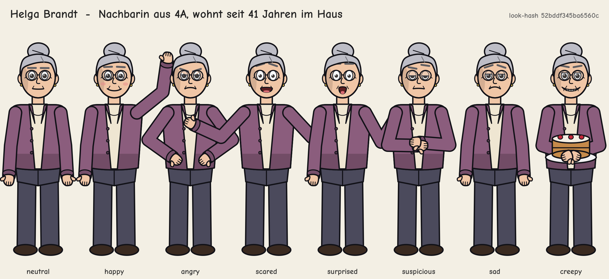
Lina
Beste Freundin, meist per Handy-Chat dabei
lacht über alles Gruselige, mutig, schickt Sprachnachrichten
Stimme: Piper None

Okan Yilmaz
Hausmeister des Hauses Lindenweg 9
freundlich, aber verschwiegen; weiß mehr als er sagt; sagt Sätze immer zweimal, wenn es ernst wird
Stimme: Piper None
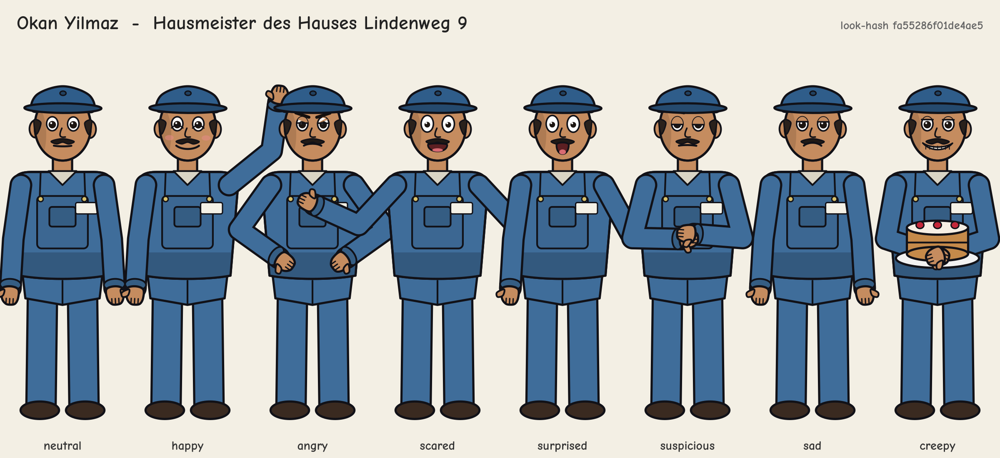
Systemprüfung
- ✓ ffmpeg ffmpeg version 6.1.1-3ubuntu5 Copyright (c) 2000-2023 the FF
- ✓ Cairo (Vektorgrafik)
- ✓ Piper TTS
- ✓ Whisper (QC)
- ✓ OpenCV (Linse)
- ✓ NumPy
- ✓ Pillow
- ✓ requests
- ✗ Chatterbox Multilingual (.venv-tts) Rückfall-Stimmen, MIT-Lizenz
- ✓ Qwen3-TTS (.venv-qwen, assets/qwen) Hauptstimmen mit Stimmklon, Apache-2.0
- ✓ ZONOS3-Mini (vendor/ZONOS3-Mini) Rückfall-Stimmen mit Emotions-Reglern, Apache-2.0
- ✓ Piper-Stimme de_DE-eva_k-x_low
- ✓ Piper-Stimme de_DE-karlsson-low
- ✓ Piper-Stimme de_DE-ramona-low
- ✓ Piper-Stimme de_DE-thorsten_emotional-medium
- ✓ Referenzstimme du
- ✓ Referenzstimme helga
- ✓ Referenzstimme lina
- ✓ Referenzstimme okan
- ✓ Schrift Bangers
- ✓ Schrift Comic Neue
- ✓ Whisper-Modell 'small'
- ✓ YouTube-Zugang config/secrets/youtube.json oder YT_*-Variablen
- ✓ TikTok automatisch (Buffer) Buffer -> TikTok duentscheidest20 (automatisch: True)
- ✓ TikTok-Entwurf (Ersatzweg) config/secrets/tiktok.json oder TT_*-Variablen
Protokoll (letzte 40 Einträge)
2026-11-24 13:52:10 [INFO] [wohnung-4b-e09] automatisch freigegeben (QC 100.0 >= 90)
2026-11-24 13:52:55 [INFO] [wohnung-4b-e09] Versuch 1: Zeitleiste + Stimmen
2026-11-24 13:53:21 [INFO] [wohnung-4b-e09] Sprachaufnahme: alle Zeilen sauber (Runde 1)
2026-11-24 13:53:21 [INFO] [wohnung-4b-e09] Laufzeit 41.8 s, 8 Einstellungen – rendere Video
2026-11-24 13:53:56 [INFO] [wohnung-4b-e09] gerendert: [0, 1, 2, 3, 4, 5, 6, 7] | aus Cache: []
2026-11-24 13:54:25 [INFO] [wohnung-4b-e09] Qualitätskontrolle läuft
2026-11-24 13:54:57 [INFO] [wohnung-4b-e09] QC Versuch 1: 100.0 Punkte – bestanden
2026-11-24 13:54:57 [INFO] [wohnung-4b-e09] automatisch freigegeben (QC 100.0 >= 90)
2026-11-24 13:55:12 [INFO] [wohnung-4b-e09] veröffentlicht auf youtube: {'platform': 'youtube', 'id': 'LvkoKwVp9DY', 'url': 'https://youtube.com/shorts/LvkoKwVp9DY', 'privacy': 'private', 'publish_at': '2026-11-24T17:00:00Z'}
2026-11-24 13:59:48 [INFO] [wohnung-4b-e09] veröffentlicht auf tiktok: {'platform': 'tiktok', 'mode': 'entwurf', 'publish_id': 'v_inbox_file~v2.7711736106512943126', 'status': 'PROCESSING_UPLOAD', 'caption': 'Ich habe dieses Foto weggeworfen… heute lag es wieder vor meiner Tür – MIT MIR drauf 😨 | Wohnung 4B – Teil 9 #duentscheidest #wohnung4b #pov #mystery #gruselig #creepy #cartoon #animation #serie #storytime'}
2026-11-25 13:28:16 [INFO] [wohnung-4b-e10] Versuch 1: Zeitleiste + Stimmen
2026-11-25 13:36:06 [INFO] [wohnung-4b-e10] Sprachaufnahme: alle Zeilen sauber (Runde 1)
2026-11-25 13:36:06 [INFO] [wohnung-4b-e10] Laufzeit 36.0 s, 7 Einstellungen – rendere Video
2026-11-25 13:36:41 [INFO] [wohnung-4b-e10] gerendert: [0, 1, 2, 3, 4, 5, 6] | aus Cache: []
2026-11-25 13:37:09 [INFO] [wohnung-4b-e10] Qualitätskontrolle läuft
2026-11-25 13:37:38 [INFO] [wohnung-4b-e10] QC Versuch 1: 100.0 Punkte – bestanden
2026-11-25 13:37:38 [INFO] [wohnung-4b-e10] automatisch freigegeben (QC 100.0 >= 90)
2026-11-25 13:37:52 [INFO] [wohnung-4b-e10] veröffentlicht auf youtube: {'platform': 'youtube', 'id': '8PVu8iMM_Ec', 'url': 'https://youtube.com/shorts/8PVu8iMM_Ec', 'privacy': 'private', 'publish_at': '2026-11-25T17:00:00Z'}
2026-11-25 13:38:17 [INFO] [wohnung-4b-e10] veröffentlicht auf tiktok: {'platform': 'tiktok', 'mode': 'entwurf', 'publish_id': 'v_inbox_file~v2.7712102570482927638', 'status': 'SEND_TO_USER_INBOX', 'caption': 'Meine Nachbarin bekommt einen Anruf… von ihrer EIGENEN Stimme 😨 | Wohnung 4B – Teil 10 #duentscheidest #wohnung4b #pov #mystery #gruselig #creepy #cartoon #animation #serie #storytime'}
2026-11-26 13:27:27 [INFO] [wohnung-4b-e11] Versuch 1: Zeitleiste + Stimmen
2026-11-26 13:35:05 [INFO] [wohnung-4b-e11] Sprachaufnahme Runde 1: neue Takes für [('2.0', 0.66, 'Das bin ich nicht.')]
2026-11-26 13:36:02 [INFO] [wohnung-4b-e11] Sprachaufnahme Runde 2: neue Takes für [('2.0', 0.66, 'Das bin ich nicht.')]
2026-11-26 13:36:56 [INFO] [wohnung-4b-e11] Sprachaufnahme Runde 3: neue Takes für [('2.0', 0.66, 'Das bin ich nicht.')]
2026-11-26 13:37:50 [INFO] [wohnung-4b-e11] Sprachaufnahme: alle Zeilen sauber (Runde 4)
2026-11-26 13:37:50 [INFO] [wohnung-4b-e11] Laufzeit 35.6 s, 7 Einstellungen – rendere Video
2026-11-26 13:38:26 [INFO] [wohnung-4b-e11] gerendert: [0, 1, 2, 3, 4, 5, 6] | aus Cache: []
2026-11-26 13:38:53 [INFO] [wohnung-4b-e11] Qualitätskontrolle läuft
2026-11-26 13:39:23 [INFO] [wohnung-4b-e11] QC Versuch 1: 98.0 Punkte – bestanden
2026-11-26 13:39:23 [INFO] [wohnung-4b-e11] automatisch freigegeben (QC 98.0 >= 90)
2026-11-26 13:39:42 [INFO] [wohnung-4b-e11] veröffentlicht auf youtube: {'platform': 'youtube', 'id': 'nwizZU5B9MQ', 'url': 'https://youtube.com/shorts/nwizZU5B9MQ', 'privacy': 'private', 'publish_at': '2026-11-26T17:00:00Z'}
2026-11-26 13:40:07 [INFO] [wohnung-4b-e11] veröffentlicht auf tiktok: {'platform': 'tiktok', 'mode': 'entwurf', 'publish_id': 'v_inbox_file~v2.7712474078401316886', 'status': 'SEND_TO_USER_INBOX', 'caption': 'Meine Nachbarin steht neben mir… und ruft mich gleichzeitig an – aus MEINER Wohnung 😨 | Wohnung 4B – Teil 11 #duentscheidest #wohnung4b #pov #mystery #gruselig #creepy #cartoon #animation #serie #storytime'}
2026-11-27 13:27:20 [INFO] [wohnung-4b-e12] Versuch 1: Zeitleiste + Stimmen
2026-11-27 13:34:39 [INFO] [wohnung-4b-e12] Sprachaufnahme Runde 1: neue Takes für [('1.0', 0.8, 'Niemand da.')]
2026-11-27 13:35:23 [INFO] [wohnung-4b-e12] Sprachaufnahme Runde 2: neue Takes für [('1.0', 0.8, 'Niemand da.')]
2026-11-27 13:36:07 [INFO] [wohnung-4b-e12] Sprachaufnahme: alle Zeilen sauber (Runde 3)
2026-11-27 13:36:07 [INFO] [wohnung-4b-e12] Laufzeit 35.7 s, 7 Einstellungen – rendere Video
2026-11-27 13:36:48 [INFO] [wohnung-4b-e12] gerendert: [0, 1, 2, 3, 4, 5, 6] | aus Cache: []
2026-11-27 13:37:12 [INFO] [wohnung-4b-e12] Qualitätskontrolle läuft
2026-11-27 13:37:40 [INFO] [wohnung-4b-e12] QC Versuch 1: 98.0 Punkte – bestanden
2026-11-27 13:37:40 [INFO] [wohnung-4b-e12] automatisch freigegeben (QC 98.0 >= 90)